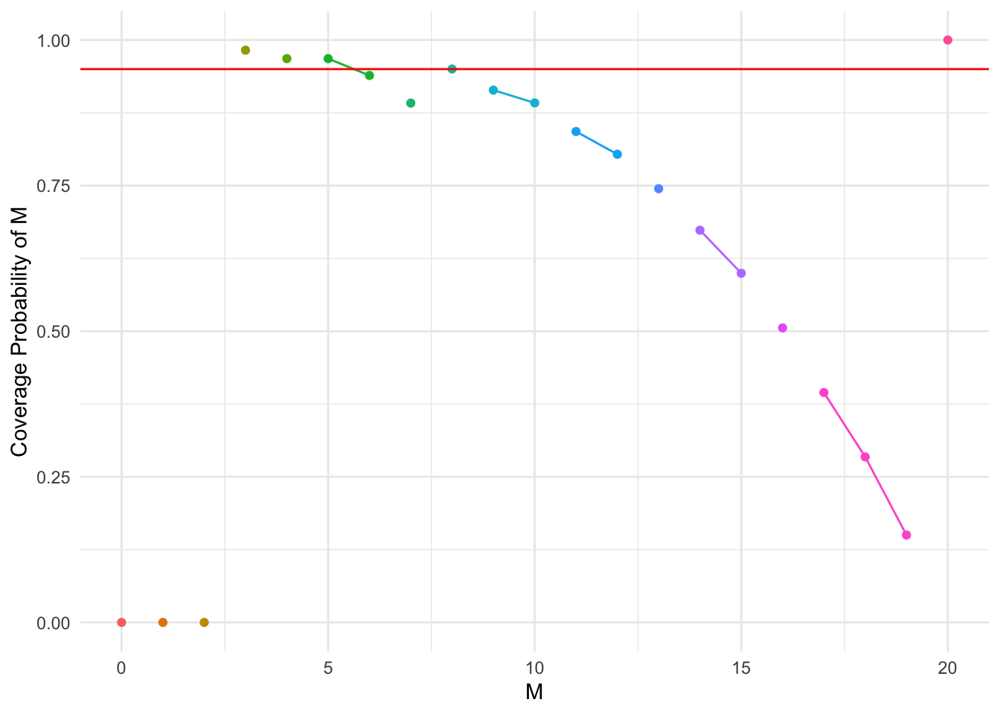

── Attaching core tidyverse packages ──────────────────────── tidyverse 2.0.0 ──
✔ dplyr 1.1.3 ✔ readr 2.1.4
✔ forcats 1.0.0 ✔ stringr 1.5.0
✔ ggplot2 3.4.3 ✔ tibble 3.2.1
✔ lubridate 1.9.2 ✔ tidyr 1.3.0
✔ purrr 1.0.2
── Conflicts ────────────────────────────────────────── tidyverse_conflicts() ──
✖ dplyr::filter() masks stats::filter()
✖ dplyr::lag() masks stats::lag()
✖ purrr::rdunif() masks extraDistr::rdunif()
ℹ Use the conflicted package (<http://conflicted.r-lib.org/>) to force all conflicts to become errors
ngh_pmf =function(x, N, M, m) { numerator =choose(m + x -1, m -1) *choose(N - m - x, M - m) denominator =choose(N, M) result = numerator / denominatorreturn(result)}# ngh_pmf = function(x, N, M, m) {# # m = # total successes (unknown) - (our notation: M)# m_pmf = M # # # n = # total failures - (our notation: X = N - M)# n_pmf = N - m_pmf # # # r = # fixed successes (our notation: m)# r_pmf = m # # # x = # balls being drawn (our notation: n = m + x) # x_pmf = r_pmf + x# # return(dnhyper(x = x_pmf, m = m_pmf, n = n_pmf, r = r_pmf))# }
ngh_cdf =function(x, N, M, m, lower_tail =TRUE) {# m = # total successes (unknown) - (our notation: M) m_pmf = M # n = # total failures - (our notation: X = N - M) n_pmf = N - m_pmf # r = # fixed successes (our notation: m) r_pmf = m # x = # balls being drawn (our notation: n = m + x) x_pmf = r_pmf + xreturn(pnhyper(q = x_pmf, m = m_pmf, n = n_pmf, r = r_pmf, lower.tail = lower_tail))}
Confidence Interval for M (total number of successes) - MLE
# M = total number of successes# m = fixed number of successes# x = number of failures before m-th successes# N = total number of items # MLE for M (Theorem 3.1 - page 3)M_MLE_function <-function(m, x, N) { M_MLE = (m / (m + x)) * N M_MLE =ceiling(M_MLE)return(M_MLE)}# Standard Error - MLE (4.2 - page 6)SE_MLE_function <-function(M_MLE, N, m) { part1 = (N * (M_MLE +1)) / (N +1) part2 = ((N - M_MLE) * (M_MLE - m +1)) / (m * (N +1) * (M_MLE +2)) part2 =sqrt(part2)return(part1 * part2)}# Confidence Interval - MLE (4.2 - page 6)CI_M_MLE <-function(m, x, N, conf_level) {# Speical End Cases: When x in N-m to Nif ((x >= (N - m)) & (x <= N)) { CI_lb = N - x CI_ub = N - x }else { M_MLE =M_MLE_function(m, x, N) SE_MLE =SE_MLE_function(M_MLE, N, m) z =qnorm(1- ((1- conf_level)/2)) CI_lb = M_MLE - (z * SE_MLE) CI_ub = M_MLE + (z * SE_MLE) } CL = (conf_level) *100return(cat(CL, "% Confidence Interval for M: [", CI_lb, ",", CI_ub, "]\n"))}
Confidence Interval for M (total number of successes) - Unbiased
# M = total number of successes# m = fixed number of successes# x = number of failures before m-th successes# N = total number of items # Unbiased Estimator for M (Theorem 3.2 - page 5)M_unbiased_function <-function(m, x, N) { M_unbiased = ((m -1) / (m + x -1)) * Nreturn(M_unbiased)}# Standard Error - Unbiased (4.1 - page 6)SE_unbiased_function <-function(M_unbiased, N, m) { part1 = (N * (m -1) * (M_unbiased +1)) / ((m * N) - M_unbiased + m -1)^2 part2 = (m * (N - M_unbiased) * (M_unbiased - m +1) * (N +1)) / (M_unbiased +2) part2 =sqrt(part2)return(part1 * part2)}# Confidence Interval - Unbiased (4.1 - page 6)CI_M_unbiased <-function(m, x, N, conf_level) {# Speical End Cases: When x in N-m to Nif ((x >= (N - m)) & (x <= N)) { CI_lb = N - x CI_ub = N - x }else{ M_unbiased =M_unbiased_function(m, x, N) SE_unbiased =SE_unbiased_function(M_unbiased, N, m) z =qnorm(1- ((1- conf_level)/2)) CI_lb = M_unbiased - (z * SE_unbiased) CI_ub = M_unbiased + (z * SE_unbiased) } CL = (conf_level) *100return(cat(CL, "% Confidence Interval for M: [", CI_lb, ",", CI_ub, "]\n"))}
CI_M_unbiased(m =10, x =30, N =100, conf_level =0.95)
CI_cov_prob_MLE <-function(N, m, conf_level =0.95) { results =data.frame(x =0:(N), lower_bound =NA, upper_bound =NA)for (xi in0:(N)) {# Speical End Cases: When x in N-m to Nif ((xi >= (N - m)) & (xi <= N)) { CI_lb = N - xi CI_ub = N - xi }else { M_MLE =M_MLE_function(m, xi, N) SE_MLE =SE_MLE_function(M_MLE, N, m) z =qnorm(1- ((1- conf_level)/2)) CI_lb = M_MLE - (z * SE_MLE) CI_ub = M_MLE + (z * SE_MLE) }# Store the results results[xi +1, "lower_bound"] = CI_lb results[xi +1, "upper_bound"] = CI_ub }return(results)}
coverage_prob_MLE <-function(M, N, m, conf_level =0.95) {# if (M < m || M > N) {# stop("Invalid parameters: Ensure M >= m, M <= N")# }# Calculates all confidence intervals ci_results =CI_cov_prob_MLE(N, m, conf_level)# Finds all x's where M is in the confidence interval covered_x = ci_results %>%filter(lower_bound <= M & upper_bound >= M) %>%pull(x)if (length(covered_x) ==0) {return(data.frame(M = M, coverage_prob =0, min_x =-1, max_x =-1)) }# Finds the min and max of covered x's to know which lines to connect in plot min_x =min(covered_x, na.rm =TRUE) max_x =max(covered_x, na.rm =TRUE)# Sums the probabilities (pmf's) of all x's where M is in the CI #total_prob = sum(sapply(covered_x, function(x) ngh_pmf(x, N, M, m))) total_prob =sum(unlist(lapply(covered_x, function(x) ngh_pmf(x, N, M, m))))return(data.frame(M = M, coverage_prob = total_prob, min_x = min_x, max_x = max_x))}
N =20m =3conf_level =0.95M_values =0:Ncoverage_df =do.call(rbind, lapply(M_values, function(M) coverage_prob_MLE(M, N, m, conf_level)))# Create a group column for consistent min_x and max_x# The group column assigns a unique group number whenever there is a change in min_x or max_x values# cumsum is used to create a cumulative sum that increments the group number whenever there is a change in min_x or max_xcoverage_df = coverage_df %>%mutate(group =cumsum(c(1, diff(min_x) !=0|diff(max_x) !=0)))ggplot(coverage_df, aes(x = M, y = coverage_prob, group = group)) +geom_line() +geom_point() +labs(x ="M", y ="Coverage Probability of M") +geom_hline(yintercept = conf_level, color ="red") +ylim(0, 1) +theme_minimal()
N =50m =3conf_level =0.95M_values =0:Ncoverage_df =do.call(rbind, lapply(M_values, function(M) coverage_prob_MLE(M, N, m, conf_level)))# Create a group column for consistent min_x and max_x# The group column assigns a unique group number whenever there is a change in min_x or max_x values# cumsum is used to create a cumulative sum that increments the group number whenever there is a change in min_x or max_xcoverage_df = coverage_df %>%mutate(group =cumsum(c(1, diff(min_x) !=0|diff(max_x) !=0)))ggplot(coverage_df, aes(x = M, y = coverage_prob, group = group)) +geom_line() +geom_point() +labs(x ="M", y ="Coverage Probability of M") +geom_hline(yintercept = conf_level, color ="red") +ylim(0, 1) +theme_minimal()

Coverage Probability for M (Unbiased)
CI_cov_prob_unbiased <-function(N, m, conf_level =0.95) { results =data.frame(x =0:(N), lower_bound =NA, upper_bound =NA)for (xi in0:(N)) {# Speical End Cases: When x in N-m to Nif ((xi >= (N - m)) & (xi <= N)) { CI_lb = N - xi CI_ub = N - xi }else { M_unbiased =M_unbiased_function(m, xi, N) SE_unbiased =SE_unbiased_function(M_unbiased, N, m) z =qnorm(1- ((1- conf_level)/2)) CI_lb = M_unbiased - (z * SE_unbiased) CI_ub = M_unbiased + (z * SE_unbiased) }# Store the results results[xi +1, "lower_bound"] = CI_lb results[xi +1, "upper_bound"] = CI_ub }return(results)}
coverage_prob_unbiased <-function(M, N, m, conf_level =0.95) {# if (M < m || M > N) {# stop("Invalid parameters: Ensure M >= m, M <= N")# }# Calculates all confidence intervals ci_results =CI_cov_prob_unbiased(N, m, conf_level)# Finds all x's where M is in the confidence interval covered_x = ci_results %>%filter(lower_bound <= M & upper_bound >= M) %>%pull(x)if (length(covered_x) ==0) {return(data.frame(M = M, coverage_prob =0, min_x =-1, max_x =-1)) }# Finds the min and max of covered x's to know which lines to connect in plot min_x =min(covered_x, na.rm =TRUE) max_x =max(covered_x, na.rm =TRUE)# Sums the probabilities (pmf's) of all x's where M is in the CI #total_prob = sum(sapply(covered_x, function(x) ngh_pmf(x, N, M, m))) total_prob =sum(unlist(lapply(covered_x, function(x) ngh_pmf(x, N, M, m))))return(data.frame(M = M, coverage_prob = total_prob, min_x = min_x, max_x = max_x))}
N =20m =3conf_level =0.95M_values =0:Ncoverage_df =do.call(rbind, lapply(M_values, function(M) coverage_prob_unbiased(M, N, m, conf_level)))# Create a group column for consistent min_x and max_x# The group column assigns a unique group number whenever there is a change in min_x or max_x values# cumsum is used to create a cumulative sum that increments the group number whenever there is a change in min_x or max_xcoverage_df = coverage_df %>%mutate(group =cumsum(c(1, diff(min_x) !=0|diff(max_x) !=0)))ggplot(coverage_df, aes(x = M, y = coverage_prob, group = group)) +geom_line() +geom_point() +labs(x ="M", y ="Coverage Probability of M") +geom_hline(yintercept = conf_level, color ="red") +ylim(0, 1) +theme_minimal()
N =50m =3conf_level =0.95M_values =0:Ncoverage_df =do.call(rbind, lapply(M_values, function(M) coverage_prob_unbiased(M, N, m, conf_level)))# Create a group column for consistent min_x and max_x# The group column assigns a unique group number whenever there is a change in min_x or max_x values# cumsum is used to create a cumulative sum that increments the group number whenever there is a change in min_x or max_xcoverage_df = coverage_df %>%mutate(group =cumsum(c(1, diff(min_x) !=0|diff(max_x) !=0)))ggplot(coverage_df, aes(x = M, y = coverage_prob, group = group)) +geom_line() +geom_point() +labs(x ="M", y ="Coverage Probability of M") +geom_hline(yintercept = conf_level, color ="red") +ylim(0, 1) +theme_minimal()